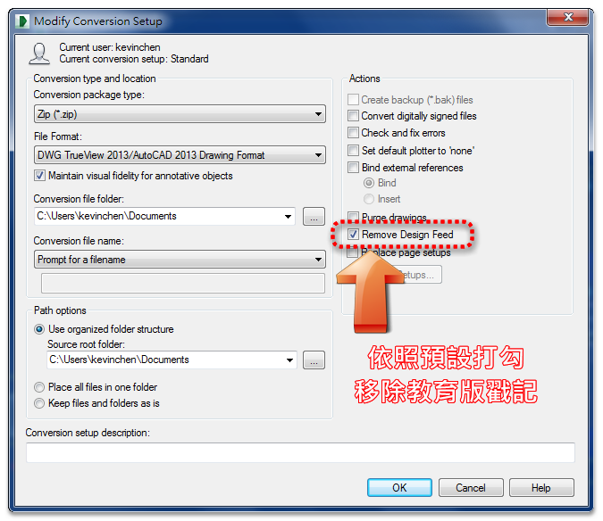

一般在業界都廣泛的使用 AutoCAD 來繪製工程圖，但是對於小型企業可能比較沒有使用到那麼多功能，往往造成AutoCAD的功能資源浪費，所以 AutoCAD 推出 LT版本，這個版本只有2D的功能，3D及LISP等較進階方面的功能被抽掉了，對於小型企業就比較適合，當然，LT版本的售價比較便宜。
但是有的使用者像是主管單位(業主)，他們檢視 DWG圖檔可能只是為了查詢圖面某部份的資訊，例如量測圖面的尺寸，或者是開啟DWG圖檔來做出圖的動作，而只是這樣簡單的需求卻要花費一大筆的預算來購買 AutoCAD，這樣似乎有點不太划算，所以 Autodesk 發展了 DWG TrueView ，這是一套可以由原廠網站免費下載取得的軟體，可以滿足使用者的基本需求，提高使用 DWG圖檔的意願，也可以經由這樣的使用將來有需要可以再來購買 AutoCAD，這樣比較符合經濟效益。
DWG TrueView 其主要功能為:
1.開啟圖檔及檢視圖面；圖層控制、取得距離及面積資訊。
2.出圖與發佈圖面；透過指定頁面設置設定，準備要出圖或發佈的圖面。
3.轉換圖檔格式；可將以 AutoCAD 為基礎的圖檔轉換為多種 AutoCAD 圖面格式。
4.DWG TrueView 2015版本開始，可以移除「教育版本戳記」。

影片教學：
http://usa.autodesk.com/adsk/servlet/pc/item?siteID=123112&id=9078813
DWG TrueView 支援多種檔案格式的輸出和轉換。
您可以直接存取使用以 AutoCAD 為基礎的應用程式建立的圖檔，以用於以下目的：
開啟和檢視 DWG 檔和 DXF 檔
從圖面中萃取幾何資訊 (例如距離、質量和體積)
將 DWG 檔出圖至繪圖機
從 DWG 檔案中建立 PDF、JPG、PNG 或 DWFx 檔案
將圖面集或圖紙集發佈至繪圖機或發佈為 DWF 或 DWFx 檔案
使用早至 AutoCAD 版本 14 的早期版本將 DWG 檔向前和向後轉換
您無須瞭解 AutoCAD 即可使用 DWG TrueView，但是瞭解 AutoCAD 圖層的工作方式以及如何使用頁面設置、出圖和發佈對話方塊將會很有幫助。
支援的檔案格式
在 AutoCAD 系列產品中建立的圖面資訊可以儲存或匯出為多種檔案格式。
DWG 圖檔格式為 AutoCAD 系列產品的原生檔案格式。使用 DWG TrueView，您可以開啟任何版本的圖檔，並且可以將其儲存為早至 AutoCAD 版本 14 的 DWG 檔格式。
DXF (圖檔交換格式) 是一種已發佈的檔案格式，用於實現 Autodesk 產品、協力廠商應用程式和非 Autodesk 產品間的互通性。
DWF (設計網頁格式) 和 DWFx (用於 Windows Vista 的 DWF) 是與無權存取以 AutoCAD 為基礎的應用程式的團隊成員、供應商、用戶、轉包商和客戶共用圖檔資訊的理想格式。
注意事項
將 DWG 檔儲存為較早的檔案格式可能會導致遺失在 AutoCAD 系列產品的更高版中所引入的功能。處理自訂物件時，還有一些需要考慮的因素。請參閱「處理自訂物件與代理物件」。
產品限制
DWG TrueView 僅限於檢視、硬本與電子發佈以及轉換作業。您無法使用它變更或儲存圖檔。其他您可能感興趣的可從 Autodesk 網站獲得的免費產品包括：
Autodesk Design Review。您可以使用 DWF 和 DWFx 格式審閱、標記、儲存和列印使用以 AutoCAD 為基礎的產品建立的圖檔。
Autodesk DWF Writer。您可以從其他 Microsoft 應用程式發佈 DWF 檔。包括 SolidWorks®、Pro/ENGINEER® 和 CATIA® 軟體的外掛程式。
資料來源：DWG TrueView 簡介